MARINE POLLUTION
Introduction
Marine pollution is the the contamination of the ocean with harmful substances like chemicals, plastics, and waste, primarily originating from land sources, which can damage marine ecosystems and harm marine life by ingestion, entanglement, or disruption of their natural habitats. Marine pollution is a growing environmental crisis that threatens the health of our oceans and marine life. It occurs when harmful substances, such as plastics, chemicals, and oil spills, enter the ocean, disrupting ecosystems and endangering aquatic species. Human activities, including industrial waste disposal, agricultural runoff, and excessive plastic consumption, have significantly contributed to the deterioration of marine environments. The consequences of marine pollution extend beyond the ocean, affecting coastal communities, global fisheries, and even human health. Addressing this issue requires global cooperation, sustainable practices, and increased awareness to protect our planet’s most vital water bodies.
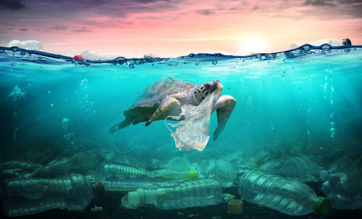
Causes of Marine Pollution
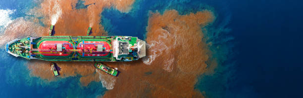
1. Oil Spills
Oil spills occur due to accidents in offshore drilling, pipeline leaks, or tanker collisions. When oil enters the ocean, it creates a thick layer on the surface, blocking sunlight and affecting marine ecosystems. Oil spills are highly toxic to marine life, causing long-term damage to fish, birds, and coastal habitats. When large quantities of oil are accidentally released into the ocean due to tanker accidents, pipeline leaks, or offshore drilling mishaps, they form a thick layer on the water’s surface, severely impacting marine life. This toxic substance coats marine animals, such as seabirds, fish, and marine mammals, making it difficult for them to swim, breathe, or regulate body temperature. Additionally, oil spills contaminate coastal habitats, harming ecosystems and local economies that depend on fishing and tourism. Cleanup efforts can be complex and costly, often taking years to restore affected areas.
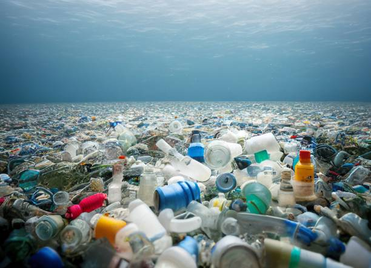
2. Plastic Waste
Plastic waste is one of the most widespread and persistent forms of marine pollution, posing a severe threat to ocean ecosystems. Every year, millions of tons of plastic enter the ocean through improper disposal, littering, and inadequate waste management. Once in the water, plastics break down into microplastics, which are ingested by marine animals, leading to internal injuries, starvation, and even death. Larger plastic debris, such as discarded fishing nets and plastic bags, can entangle sea creatures, restricting their movement and causing suffocation. Additionally, plastic pollution disrupts coral reefs and contaminates the food chain, ultimately affecting human health.
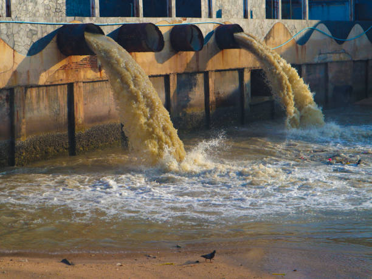
3. Industrial Discharge
Industrial discharge is a major contributor to marine pollution, introducing harmful chemicals, heavy metals, and toxic waste into ocean ecosystems. Many industries release untreated or poorly treated wastewater into rivers and coastal areas, contaminating marine habitats with substances like mercury, lead, and oil byproducts. These pollutants can be highly toxic to marine life, causing genetic mutations, reproductive issues, and mass die-offs of fish and other aquatic organisms. Additionally, industrial waste can lead to oxygen depletion in the water, creating dead zones where marine life cannot survive. The long-term effects of industrial pollution extend beyond marine ecosystems, impacting fisheries, local economies, and human health through contaminated seafood.
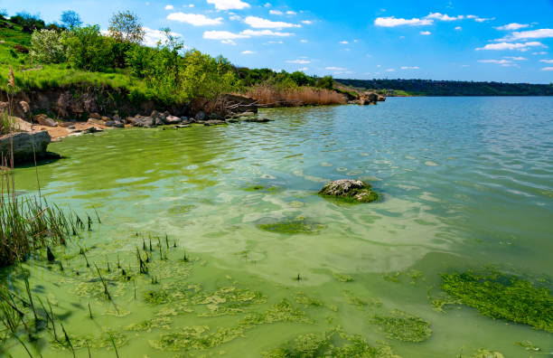
4. Agricultural Runoff
Agricultural runoff is a significant source of marine pollution, carrying excess fertilizers, pesticides, and animal waste into rivers and coastal waters. When rain or irrigation washes these substances from farmlands into the ocean, they introduce high levels of nitrogen and phosphorus, leading to harmful algal blooms. These blooms deplete oxygen in the water, creating dead zones where marine life struggles to survive. Additionally, pesticides and herbicides in runoff contain toxic chemicals that harm aquatic species, disrupting food chains and ecosystems. The contamination of marine environments also affects human populations by polluting seafood and drinking water sources. This leads to a phenomenon called eutrophication, where excess nutrients cause algal blooms. These blooms deplete oxygen levels in the water, creating dead zones where marine life cannot survive.
Effects on Marine Life
Marine pollution has devastating effects on marine life, disrupting ecosystems and threatening the survival of countless species. One of the most severe impacts is habitat destruction, as pollutants such as oil spills, plastic waste, and toxic chemicals degrade coral reefs, mangroves, and seagrass beds, which serve as crucial breeding and feeding grounds for marine organisms.
Additionally, pollution leads to poisoning and entanglement; marine animals often ingest plastic debris, mistaking it for food, which can cause internal injuries, starvation, and death. Oil spills coat the bodies of seabirds and marine mammals, impairing their ability to move, hunt, and regulate body temperature.
Furthermore, agricultural and industrial runoff contribute to dead zones, areas with little to no oxygen, where fish and other marine species cannot survive. These effects not only threaten biodiversity but also disrupt food chains, ultimately affecting human populations that rely on marine resources for food and livelihoods.
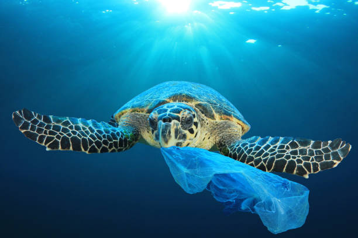
Solutions to Reduce Marine Pollution
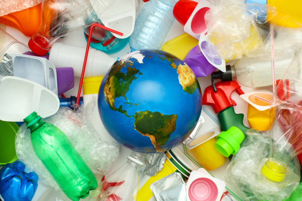
1. Reducing Plastic Usage
One of the most effective ways to combat marine pollution is by reducing plastic consumption. People can switch to reusable bags, bottles, and straws to minimize single-use plastics. Governments and companies can implement bans on plastic products and promote biodegradable alternatives.
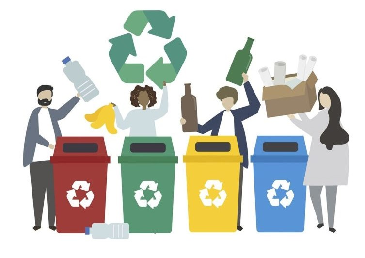
2. Proper Waste Disposal and Recycling
Waste management plays a crucial role in reducing ocean pollution. By segregating waste into recyclable and non-recyclable materials, communities can prevent plastics and harmful substances from entering water bodies. Establishing efficient recycling programs helps convert waste into reusable materials.
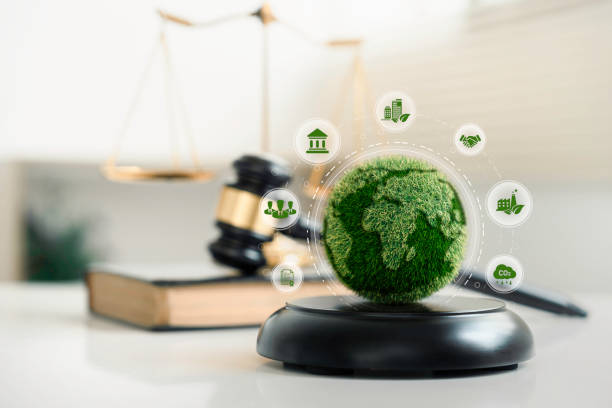
3. Stricter Environmental Regulations
Governments must enforce stricter laws on industries that dump toxic waste into oceans. Fines and penalties should be imposed on companies that violate pollution laws. Additionally, promoting sustainable practices in industries such as fishing, agriculture, and manufacturing can significantly reduce marine pollution.
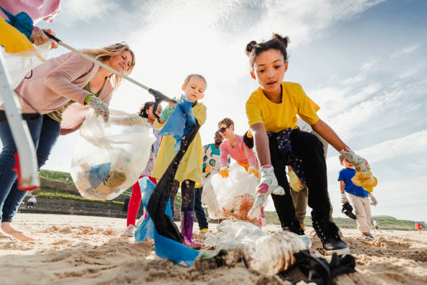
4. Supporting Marine Conservation Programs
Organizations and volunteers play a vital role in protecting marine life. Participating in beach cleanups, supporting ocean conservation charities, and spreading awareness about marine pollution can help restore ocean health. Marine protected areas (MPAs) should be expanded to safeguard aquatic ecosystems.
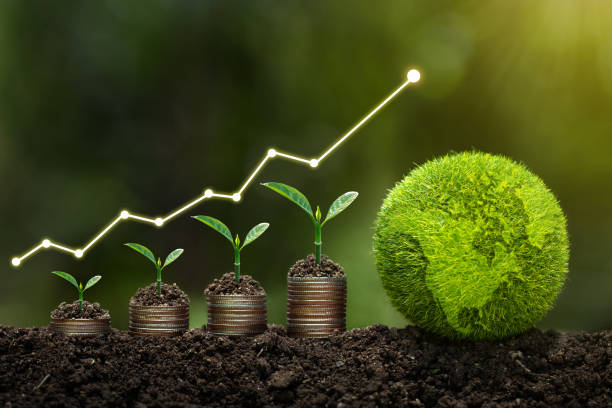
5. Reducing Chemical and Agricultural Runoff
Farmers can adopt eco-friendly agricultural practices by using organic fertilizers and reducing pesticide use. Implementing buffer zones near water bodies can prevent harmful chemicals from reaching the ocean. Industries should treat wastewater before releasing it into rivers and seas.
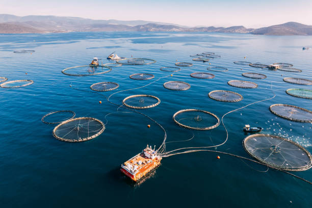
6. Promoting Sustainable Fishing Practices
Overfishing and destructive fishing methods contribute to marine pollution. Sustainable fishing techniques, such as limiting bycatch and avoiding habitat destruction, should be adopted. Consumers can support eco-certified seafood products to encourage responsible fishing industries.